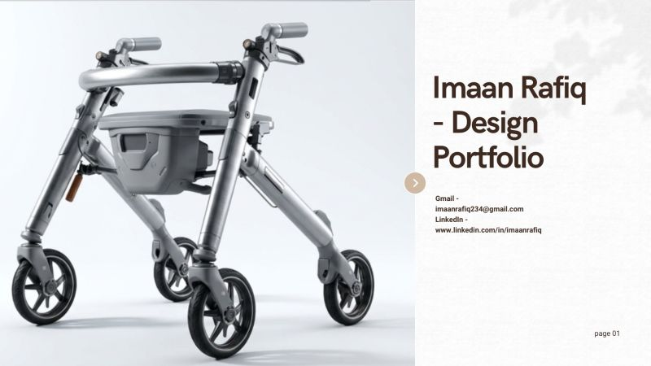

Overview
The printed portfolio: four projects — Smart Walker, Coffee Machine, Speaker and Drone — sequenced from research to outcome.
The printed book that collects four projects — Smart Walker, Coffee Machine, Speaker and Drone — each taken from research and insight through process to outcome, with the skills and contact pages framing the work.
About
A product design graduate with a keen interest in user-centred design and problem solving, skilled in CAD, prototyping and visual communication, and passionate about creating functional and aesthetically refined solutions — seeking a graduate role in product or industrial design.
Skills
Design: user research, concept development, sketching and ideation, prototyping. Technical: SOLIDWORKS and Fusion 360, Adobe Illustrator and Photoshop, KeyShot rendering. Plus communication and collaborative problem solving.
How it's sequenced
Each project follows the same rhythm — title, brief, research and insight, process, then outcome. Holding the structure constant lets the work itself carry the variation, and makes the book readable in a single sitting.
Gallery